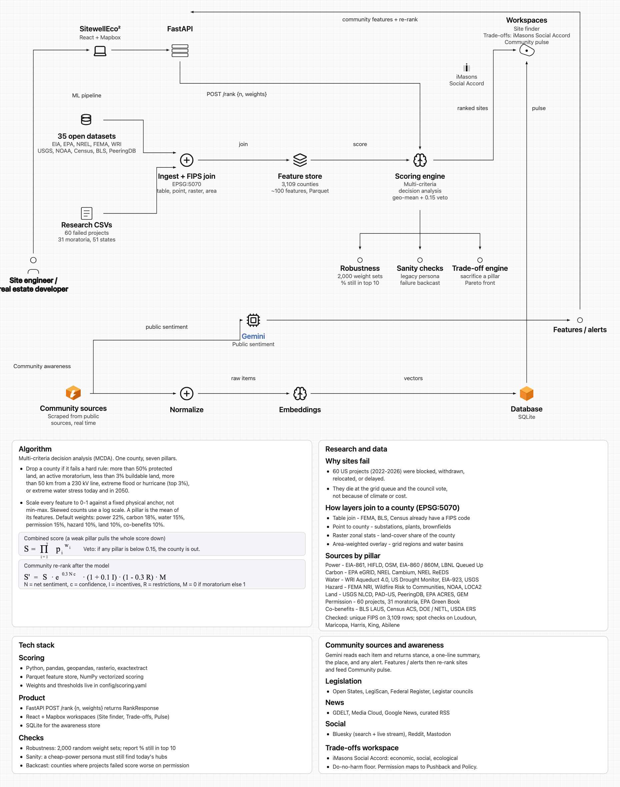

The Hacker Toolkit
Where should America's next sustainable data center be built, and how will that place feel about it?
$64 billion
That is the value of US data-center projects Data Center Watch found blocked or delayed by local opposition through early 2025. Their later updates put the amount stalled in 2025 alone at about $156 billion. Those reports overlap, so we are not adding them into a bigger headline.
The cost of picking the wrong county is years of land options, interconnection studies, and political capital. If a site dies at the hearing or the grid queue, it joins that pile.
Riddhi Raina Prasad
rrp4822@nyu.edu
Product, interface, and architecture
Krish Jani
kj2743@nyu.edu
Scoring model, research, and the feature store
GitHub: AI-Data-Center-ML-Engine-SkyWalkers
The live app is in siting-platform. The scoring research lives in ML-Model.
The country is racing to site data centers for AI and cloud. Most tools still rank cheap power and tax breaks. That is how Loudoun County filled up and still cannot get on the grid in time. A site that looks perfect on paper is worthless if it cannot get power or a permit.
SitewellEco2 is a working siting platform with three rooms that share one ranking. Site finder is the map. Trade-offs is the iMasons Social Accord. Community pulse is live bills, news, and posts. We score a place on whether it can be built and whether it should be built, then we keep watching after the shortlist is drawn.
1. The Hacker Mindset
Riddhi Raina Prasad (rrp4822@nyu.edu) owns the product, the interface, and how the pieces fit together. Krish Jani (kj2743@nyu.edu) owns the scoring model, the research, and the county feature store.
We care about honest community signals and about the iMasons Social Accord, not a green sticker on a cheap megawatt. The goal was to ship a working app and keep every claim tied to a public source.
We want the next wave of American data centers to go where the grid, the water, and the people can actually take them. The first idea was a map that ranks counties on clean power. What we added, because siting tools skip them, is permission risk and live public sentiment.
The timing is not abstract. Data Center Watch started with 142 opposition groups. By mid-2025 they were tracking far more, and projects kept dying at the queue and the council vote.
We assumed projects fail on climate or cost. That was wrong. In sixty US projects from 2022 to 2026, the usual death is the grid queue or the county saying no.
We assumed a cheap-power map would be enough. That was wrong. Loudoun still wins those maps and still cannot interconnect in time.
We assumed communities leave a public trail. That was true. Bills, news, and posts can be tied to a county FIPS code.
We assumed a hidden ranker would be trusted. That was wrong for this buyer. They need a score they can explain in a room.
Ship a way to rank a place, trade off what you are willing to give up, and watch that place after you shortlist it. Also ship a scoring contract the ML repo can fill. We built for technology, presentation, innovation, execution, and theme. The public trail is the GitHub org and the live app.
1. The Hacker Mindset
The customer is a site engineer or real estate developer who has to pick a US county and then defend that pick. The offer is simple. Rank the country on whether a campus can live there, then see how the community is moving before anyone buys the land.
People reach us through the globe, the satellite map, the shortlist, and GitHub. The thing we want them to do is open Site finder, move the sliders, click a point, and read the pulse.
Site finder is a 3D globe or a Mapbox satellite map, with sliders and a deep dive when you click a point. Trade-offs uses the iMasons Social Accord: eighteen indicators and a do-no-harm floor so tax revenue cannot hide a wrecked water cycle. Community pulse is news, bills, and posts, summarized by Gemini, with a US map and alerts.
FastAPI handles scoring, the community re-rank, awareness, and the Accord engine. The ML path scores 3,109 counties on about a hundred features with a seven-pillar model, and talks to the app through one ranking request.
We read blocked, withdrawn, and delayed US projects. They rarely die because the climate model was wrong. They die because the transmission never comes, or the county says no. So we built a rank that treats permission and sentiment as first-class signals, not a footnote at the back of a deck.
First we put the live scoring service behind the same ranking request the app already makes, and we keep collecting. After that we can go down to parcels, and we can add utility-commission dockets. Later, a developer can watch a real portfolio instead of a one-off shortlist.
The useful trick is already in: after the model scores a place, community signals move it. A confirmed moratorium takes the site to zero. We also ran two thousand random weight sets. If a county stays in the top ten when the weights jitter, it is stable, not a slider accident.
2. Rapid Ideation
I am a site engineer or a real estate developer. I am trying to pick a US county for a large data center before we spend years on land and interconnection. The maps I get are cheap-power heatmaps, because the industry still treats community opposition and water as afterthoughts. That leaves me exposed. I can win a model and still lose the county hearing. In a better world I would see one shortlist that is honest about power, water, climate, land, and whether people will let this get built.
They see interconnection queues, brownfields, protest headlines, and state moratoria.
They wonder whether a county is actually buildable, or only cheap on a heatmap.
They feel urgency from AI load, and risk from a wait that can run many years.
They compare a few states, fly a consultant, and then get surprised by a bill.
Time to power, water stress, farmland fights, and surprise moratoria. Also tools that hide a wrecked pillar behind a high average, so a beautiful score still dies in public.
A shortlist that still looks good when the weights change. A clear view of economic, social, and ecological trade-offs. A pulse that links every claim to a source they can open.
We started with energy and carbon only: the grid mix, time to power, and surplus renewables.
We added water, hazard, land reuse, and heat recovery. It was still a static map.
We added permission risk from sixty failed projects and thirty-one moratoria, plus a live community engine. First we rank. Then we re-rank.
SitewellEco2 scores every US county with a model you can explain, lets public sentiment move the rank, and lets you trade off economic, social, and ecological value without letting one gain erase harm. Three rooms, one ranking. A globe or a satellite map. Sliders. An Accord radar. A live pulse.
3. Hacker's Canvas
Siting tools optimize for cheap power and tax breaks. They miss the two ways projects actually die: the grid queue and the council vote. A high score that hides terrible water or an active moratorium is not insight. It is a trap.
Utility heatmaps, consultant slide decks, county GIS, and a news search. Some teams train a model on where data centers already are, which mostly rediscovers Dallas, Houston, and Northern Virginia.
Site engineers, real estate developers, and digital-infrastructure teams. Later, utilities and counties that want inbound interest shown honestly, not flattered.
Developers who are comparing a shortlist of states right now. Teams that already speak iMasons language: People, Planet, Power, Pushback, Policy.
We do not claim we found the right weights. We show a top ten that stays on top when the weights move. Then you can trade off live, and the rank moves again when the community speaks.
It looks like a siting heatmap, except it scores sustainability in the open and it keeps listening after the shortlist is drawn.
Every US county, seven pillars, hard exclusions, and a combined score that falls if one pillar is weak. Community can move the list. Trade-offs follow the iMasons Accord. Every pulse item links to its source.
Riddhi built the product, the React and Mapbox work, the globe, and the FastAPI wiring. Krish built the geospatial features, the scoring, the research files, and the robustness checks. We share the Gemini awareness path and the Social Accord work.
The live app, the GitHub org AI-Data-Center-ML-Engine-SkyWalkers, the hackathon demo, and materials that use the same iMasons language the industry already accepted.
How many counties we scored. How much of the top ten survives two thousand random weight sets. How far a site moves after community signals. How much coverage and confidence a county has. Alerts only from official records or established news.
This weekend is about proving the method. Next is a hosted shortlist for a developer team. After that, a watched portfolio and county-level briefings.
Open government data, time on sixty failed projects, the joins and robustness runs, Gemini summaries, a Mapbox token, and the engineering for the three rooms.
4. Business Model CPR
Digital infrastructure and data-center real estate. The people who have to put a campus somewhere in the United States.
The person who has to recommend a county and then stand behind it: a site engineer or a real estate developer.
The United States. The feature store covers 3,109 counties. The app lets you explore candidates across the country, not one metro.
We sit on top of power-price maps as the sustainability and permission layer. We are not another model that points at wherever the last campus went.
Data Center Watch documented $64 billion blocked or delayed through early 2025, and about $156 billion stalled in 2025 alone. The industry already accepted Social Accord language. The gap is a tool that uses both.
After a score you can explain, community signals re-rank the list. A confirmed moratorium is zero, not a footnote in appendix C.
The iMasons Social Accord. Public sources such as Open States, LegiScan, the Federal Register, GDELT, and Bluesky. One ranking request between the app and the model, so those two repos can move on their own clocks.
Near term, score a shortlist for a project. Later, subscribe to a watched set of counties. That is not the hackathon prize. It is the path after the method is real.
How often a top-ten county survives random weights. Whether known failures look worse on permission. How much community coverage a county has. How fast the rank updates when someone moves a slider.
Demo the three rooms. Hand a developer their top ten under two stories, carbon first and cost first. Then show a county that falls off the list when a moratorium appears.
The architecture diagram and this toolkit. On pulse, every card quotes the sentence the model used, so you can see why a place moved.
We have a working app, not a mockup. The scoring is open. The awareness path is live. The extra pillar exists because we read sixty failed projects and thirty-one moratoria, not because it looked good on a slide.
5. Pitch Like a Pro
The person in the chair is a site engineer or a real estate developer. They need a place that can get power and a permit, not only a cheap megawatt. We help them pick a county they can stand behind in a board room and in a town hall. They get one shortlist, weights they can move, a view of how the community is shifting, Accord trade-offs, and sources they can click.
The core team is Riddhi Raina Prasad and Krish Jani, SkyWalkers. The landscape is consultant GIS, utility maps, and generic site-selection models. None of those combine an open county score, a veto when a pillar collapses, and a live community engine on iMasons terms. We already run FastAPI, React, Mapbox, the globe, Gemini, SQLite, Parquet, and NumPy.
Money comes later, as hosted shortlists and watched portfolios. That is not this weekend's job. Next we put the live model behind the same ranking request, add more official dockets, and go down toward parcels. When we retrain, we bump the model version. Sentiment knobs live in the server settings. Weights live in a config file, so we can change a story without rewriting the app.
Most siting tools ask where power is cheap. That is how we over-built Northern Virginia and still cannot interconnect. We asked a harder pair of questions. Can it get built, and should it be built?
We scored every US county on seven pillars: power, carbon, water, permission, hazard, land, and co-benefits. Hard rules drop a county that cannot work. A weak pillar pulls the whole score down, so cheap power cannot hide a dead water cycle. Then we keep watching. Legislation, news, and public posts go through Gemini. Those features move the rank. Trade-offs uses the iMasons Social Accord, so a gain in tax revenue cannot erase ecological harm.
Open the globe. Move the sliders. Click a point. Read what that county is saying this week.
6. Competitive landscape
Consultants score power and write a deck. Utility maps still crown Loudoun. Directories show where campuses already are. Nobody re-ranks a county when a bill or a moratorium appears.
| What you need | SitewellEco2 | Cushman & Wakefield | JLL site selection | A manual consultant |
|---|---|---|---|---|
| Power and infrastructure score | Yes | Yes | Yes | Yes |
| Water, climate, land, and habitat | Yes | Some | Some | Some |
| Community pulse from bills, news, and posts | Yes | No | No | No |
| One post cannot swing a county | Yes | No | No | No |
| On-demand rank for any US county | Yes | No | No | No |
| Check against blocked and delayed projects | Yes | No | No | Sometimes |
| iMasons Accord and a do-no-harm floor | Yes | No | No | No |
| Live web workspaces | Yes | A client portal | A client portal | No |
| How you buy it | A working product | Often $25k or more per project | Often $15k or more per project | Often $50k or more per project |
Cushman and JLL will fly the county, call the utility, and deliver a careful deck. Utility heatmaps are honest about time to power. Directories tell you where campuses already landed. A manual GIS shop can build any layer you want if you pay for the weeks.
They still treat the council vote as a footnote. They do not tie bills and posts to a county and then move the rank. They do not drop a place when water collapses. They do not put iMasons on the same shortlist as the map. By the time the deck is done, the county may already have a moratorium.
Score the physics, watch the people, and trade off in the open before capital is committed. That is not another model of where the last campus went.
7. Architecture
A site engineer uses SitewellEco2 in the browser, on React and Mapbox. The app asks FastAPI for a ranking and sends along the slider weights. Ranked sites open in three rooms: the map, the trade-offs, and the pulse.
A second path collects public sources, stores them, and lets Gemini read what people and legislatures are saying. Those features come back into FastAPI and move the rank. They also fill Community pulse. The picture below is that whole loop.

8. Scoring, data, and stack
This is multi-criteria decision analysis, not a hidden ranker. We drop a county that fails a hard rule: too much protected land, an active moratorium, almost no buildable land, too far from a high-voltage line, extreme flood or hurricane risk, or extreme water stress today and in 2050. Everything else is scaled from 0 to 1 against a fixed physical anchor. A pillar is the average of its features. Defaults: power 22 percent, carbon 18, water 15, permission 15, hazard 10, land 10, co-benefits 10.
A weak pillar pulls the whole score down. If any pillar is below 0.15, the county is out.
N is net sentiment, c is confidence, I is incentives, R is restrictions. M is 0 if there is a moratorium, else 1.
Sixty US projects from 2022 to 2026 were blocked, withdrawn, relocated, or delayed. They die at the grid queue and the council vote, which is why permission is its own pillar.
Layers meet at the county. FEMA, BLS, and Census already have a FIPS code. Substations, plants, and brownfields are counted inside the county. Land cover is averaged. Grid regions and basins are blended by area. About thirty-five open datasets become 3,109 counties and about a hundred features. We checked unique FIPS codes and spot-checked Loudoun, Maricopa, Harris, King, and Abilene.
Python does the joins, with pandas and geopandas for tables and shapes, and raster tools for land cover. The finished table is Parquet. NumPy re-scores it when weights change. FastAPI is the door: the app asks for a ranked list and gets one back. React draws the rooms. Mapbox or the globe is the map. SQLite holds the pulse. We shake the weights two thousand times, check that a cheap-power story still finds today's hubs, and check that failed-project counties look worse on permission.
We collect first, without AI, then keep only what is about data centers, remove copies, attach a county, and store it. Gemini writes stance, a one-line summary, the place, and any alert. Bills come from Open States, LegiScan, the Federal Register, and Legistar. News comes from GDELT, Media Cloud, Google News, and RSS. Posts come from Bluesky, Reddit, and Mastodon. Official records count more than social posts. One social post never raises an alert. A moratorium has to come from an official or established news source. Every item links back.
9. Scale
Joining about thirty-five datasets onto every county is slow, so we do it ahead of time and save a table of 3,109 counties and about a hundred columns. When someone moves a slider, we re-score that table. We do not rebuild the map from rasters. The web server does not keep user state. The app only needs a ranked list back, so today's stand-in model and tomorrow's live model can swap without changing the screens.
Site finder, Trade-offs, and Community pulse all read the same ranking. Adding a room does not mean running the model three times. Weights sit in a config file. When we retrain, we change the model version. The knobs that decide how much sentiment moves a site sit in server settings, so we can tune them without rebuilding the county table.
Collectors page through public APIs. We save an item first, and we only ask Gemini to read what is new. A keyword filter and de-duplication keep that queue small. Embeddings are for search, not for every rank. A clock can pull new bills and news on a schedule without touching the county scores.
Today the grain is the county. The same way we join tables, points, rasters, and overlays can later go down to parcels. A new source only has to land in the same clean-up steps: normalize, attach a place, store. SQLite is enough for the hackathon. If the store grows, we can move it without changing what the app asks for.
A watched portfolio is a filter on those 3,109 rows, plus alerts for the counties you care about. The two-thousand-weight check runs offline, not when someone opens the map. Official sources weigh more than social posts, so a busy day on Bluesky does not rewrite the rank.
We do not crawl the web every time someone clicks. We do not rejoin rasters when a slider moves. We do not let one social post raise an alert. The system stays cheap because the county table is already built, the app only asks for a rank, and we only spend AI on what is new.
Riddhi Raina Prasad, rrp4822@nyu.edu. Krish Jani, kj2743@nyu.edu.